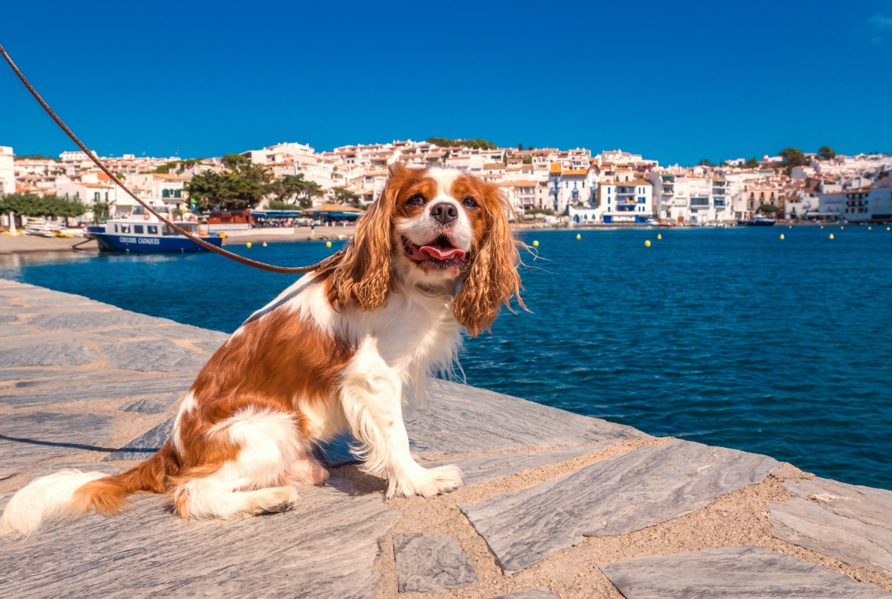
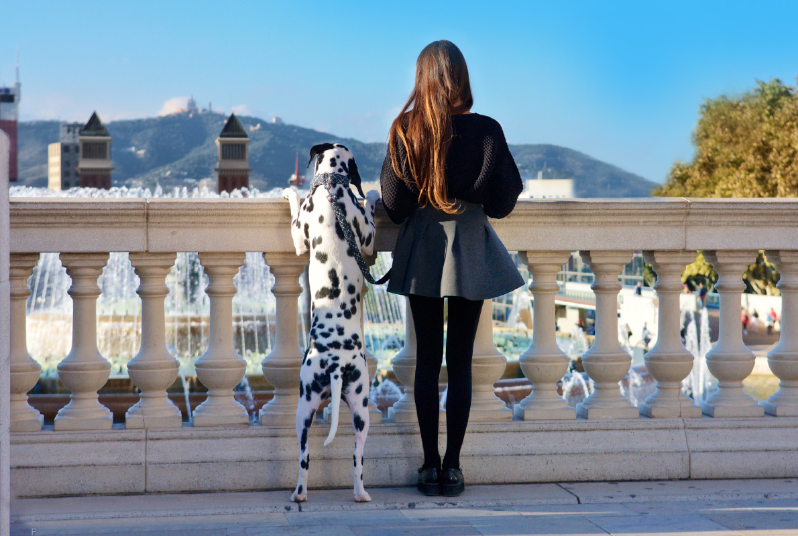
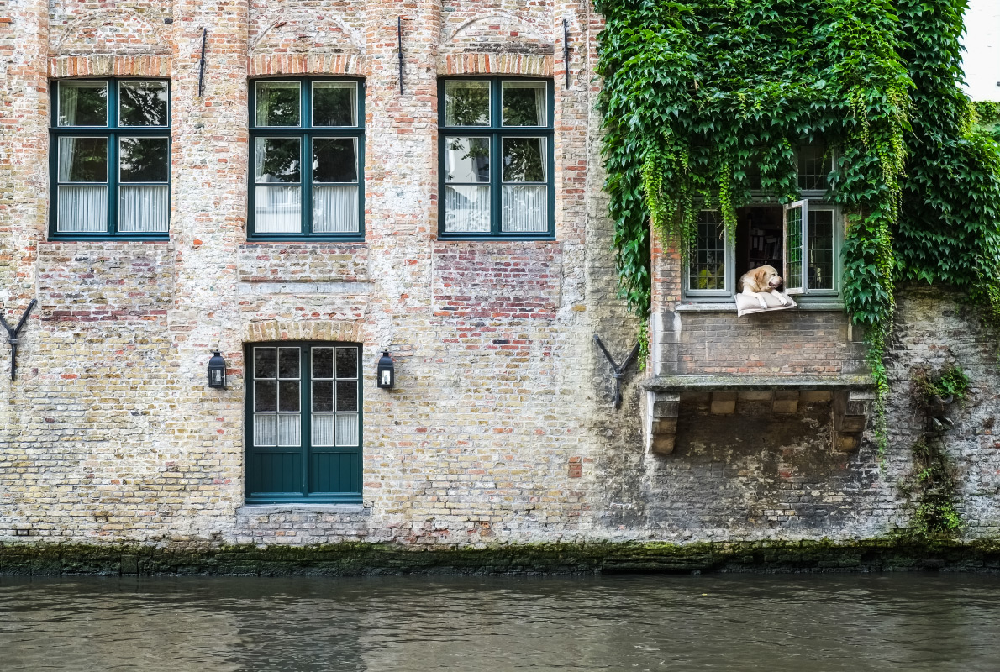
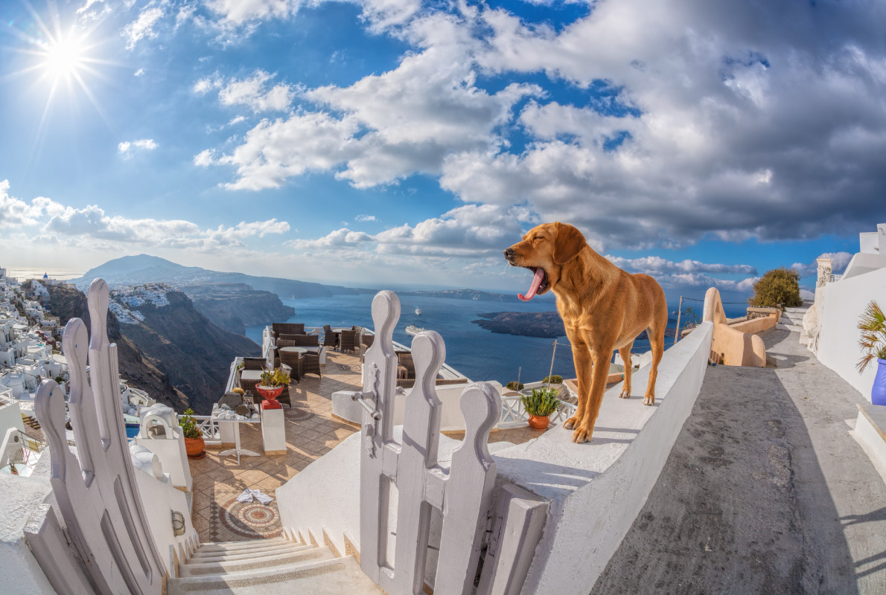

Paris is one of the best destinations in Europe with more than 1,000 pet
friendly establishments, hotels, appartments. Even the sublime Sofitel Paris
Le Faubourg will welcome you and your pet during your stay in Paris.
Enjoy this warm welcome and let your pet walk through the parks in Paris
such as the Parc des Buttes Chaumont or the Jardins du Luxembourg. If your
pet wants to rest comfortably at the hotel, take advantage of it and offer
you one of the best activities in Paris such as the visit of the Eiffel Tower,
the Louvre or a cruise on the Seine.
Click on the "pet friendly" option to see all available accommodations in Paris

2. Cadaques,spain
Cadaques is a charming fishing village where the eccentric Salvator Dali
used to have a holiday as well as his more moderate but equally brilliant
friend, Marcel Duchamp.
Treat yourself to a piece of history of art, sun and blue waters in this
superb destination. Choose from over 130 pet friendly establishments, hotels,
appartments, at the best price for a holiday under the sun of Cadaques.
Click on the "pet friendly" option to discover all available accommodations in Cadaques.

3. Madrid,Spain
With more than 340 pet-friendly hotels, Madrid is one of the best
pet-friendly destinations in Europe. Book your pet-friendly accommodation
at the best price in Madrid such as the magnificent Westin Palace Hotel.
If you want to refresh yourself during your stay in Madrid, treat yourself
to a hotel with a rooftop pool like the Catalonia Gran Via.
Book your pet-friendly hotel in the capital of Spain as well as your best
activities as a Madrid Royal Palace guided tour of the Prado museum.
Do not forget to click on the "pet friendly" option to discover all
the available accommodations in Madrid.

4. Bruges,Belgium
More than 50 establishments are pet friendly in Bruges. The town is a
perfect destination for travellers with pets. Discover all the beauties
and treasures of Bruges with your pet.
Book your hotel at the best price and your favourite activities in Bruges
such as a private walking tour or a beer & chocolate tasting in Bruges.
Click on the "pet-friendly" option to see all available accommodations in Bruges.

5. Santorini,Greece
With nearly 300 pet friendly accommodations, Santorini, the beautiful
island located in the Aegean Sea is a paradise for you and your dog.
You will be happy to stroll around in the alleys.
Choose your pet friendly accommodation at the best price in Santorini,
your favourite activities and have an unforgettable holiday in one of
the Greek Islands.
Click on the "pet friendly" option to see all available accommodations in Santorini.